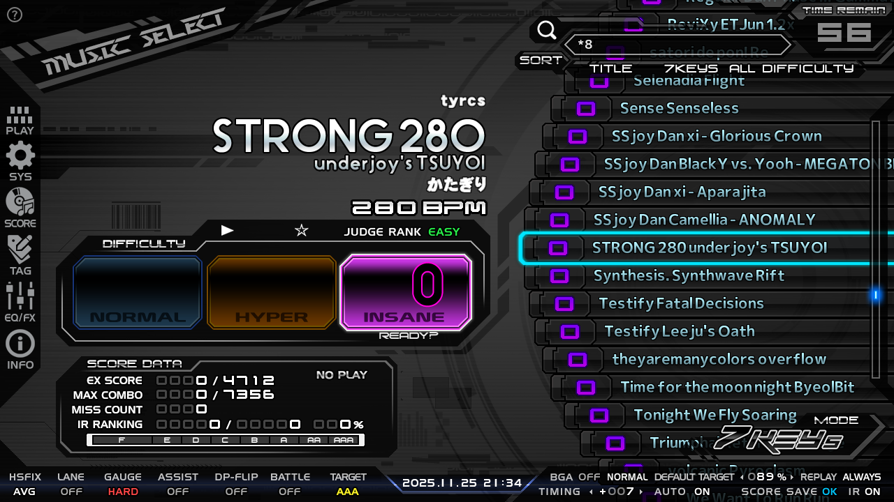
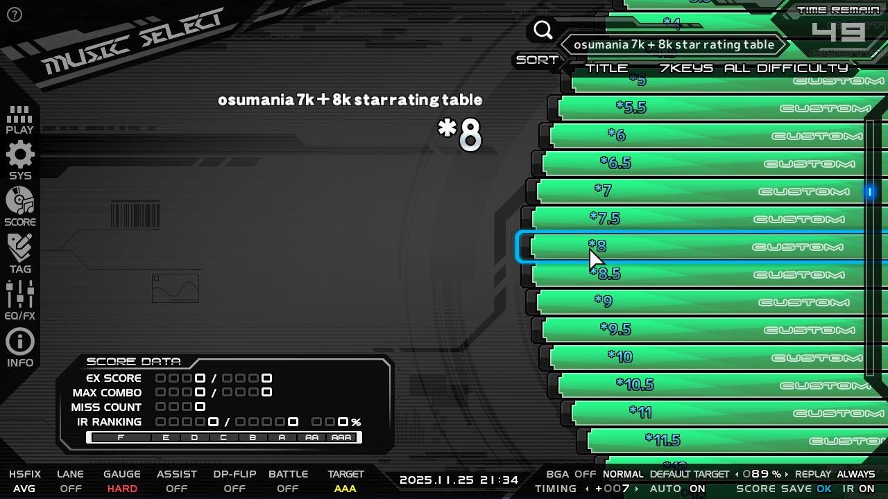
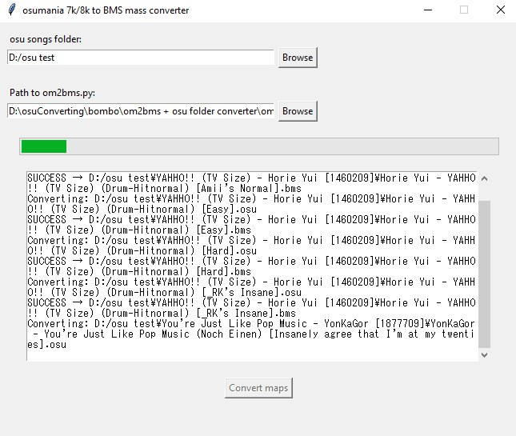

7k osumania converts star rating table for LR2 and Beatoraja
7k osumania CONVERTS star rating table raja/LR2
all 7k and 8k mania ranked and loved BMS converts in one table


Load this page's url into beatoraja or BeMusicSeeker as a table, it will display your osumania 7k/8k converts in the right folder depending on its star rating.
Getting the converts:
You can either:
- download my folder: Download
- if you already have an osumania charts folder, use om2bms + folder converter to make a convert for every chart in your folder: Download
Using om2bms + folder converter:

Using om2bms + folder converter:
Extract the .7z, run osu_folder_converter_GUI.py, select the path to your osu charts folder, hit Convert maps, load the folder into raja or lr2's jukebox as if it was a regular bms folder.
This will make a .bms convert of every .osu file in your osu folder, and then move it to the original map's folder.
If it gets stuck on one file, let it run for 20 seconds and it will be skipped.